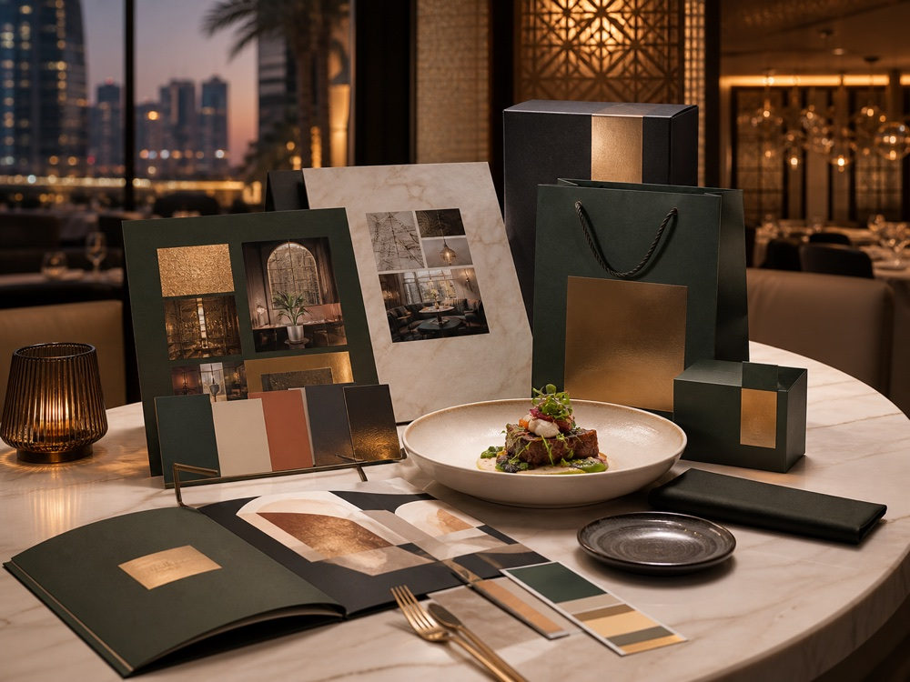

Restaurant marketing agency in Dubai that fills tables.
Talk The Taste helps Dubai restaurants, cafes, cloud kitchens and hotel F&B outlets turn social media, food content and delivery listings into bookings, calls and orders. No juniors, no outsourcing — you work directly with the team running your account.

Content, campaigns and conversion, run by one team.
Food Photography & Reels
A recurring monthly shoot covering hero dishes, table settings and behind-the-scenes content, edited into feed posts, reels and story sets ready for your calendar.
Social Media Management
Posting cadence, captions, community replies and a campaign calendar built around your service, seasonality and slow-day patterns — not a generic content template.
Delivery Platform Optimization
Menu photography, item descriptions and promotional slots reviewed and improved on Talabat, Deliveroo, Careem and Noon Food, where a large share of F&B revenue now originates.
Google Maps & Reviews
Profile completeness, photo uploads, review response templates and a request cadence that turns satisfied covers into public ratings.
Paid Social Campaigns
Boosted content and always-on ad sets targeted by neighbourhood, timed around lunch, dinner and weekend brunch windows rather than run continuously at flat spend.
Website & Booking Flow
Menu pages, reservation links, WhatsApp click-to-chat and delivery buttons fixed or rebuilt so visitors convert instead of bouncing to a competitor.
A monthly rhythm built around service, not a generic four-step process.
Audit (Week 1)
We review your current social presence, delivery listings, Google profile and website, and flag what is costing bookings, calls or orders today.
Content shoot (Week 1–2)
One on-site shoot covering hero dishes, ambience and any launch or seasonal content, scheduled around your service hours so it never disrupts covers.
Calendar and campaigns go live (Week 2–3)
Posting, community management and any paid campaigns launch on a fixed weekly cadence, with a shared calendar so you can see what's coming before it posts.
Monthly reporting and iteration
A short monthly report covering reach, engagement, delivery-platform performance and booking or enquiry volume, with next month's plan adjusted against what actually worked.
Built for Dubai F&B operators, not generic retail brands.
Fine dining & casual dining
Brands that need consistent, high-quality food content and a reservation flow that matches the standard of the room.
Cafes & cloud kitchens
Volume-driven operators where delivery listing quality and repeat-order content matter more than polished brand films.
Hotel F&B outlets
Restaurants and lounges operating inside a hotel brand, needing content and campaigns that support the outlet without competing with the property's own marketing.
What we account for that a generic template can't.
Delivery platform listings
Talabat, Deliveroo, Careem and Noon Food now account for a significant share of F&B revenue in Dubai. A listing with poor photography and vague item names loses orders before a customer ever reaches your website — we treat these listings as storefronts, not an afterthought.
Ramadan and seasonal demand
Dining patterns shift sharply around Ramadan, Dubai Shopping Festival and the summer slowdown. Content and campaign spend need to move with those cycles rather than run on a flat monthly plan all year.
UAE influencer licensing
Paid influencer activity in the UAE requires a UAE Media Council licence, and individual creators need their own permit. We confirm licence numbers before any campaign goes live, which protects your venue from exposure if a partnership is ever reviewed.
A recent restaurant brand launch in Dubai.
"Talk The Taste built our brand identity, website and launch campaign from a blank page. We opened with a social following already in place and a booking flow that worked from day one."
Restaurants we work with across Dubai.
We work with restaurants, cafes and cloud kitchens across Business Bay, Downtown Dubai, Dubai Marina, JLT, DIFC, JBR, Jumeirah and Al Quoz. Most of our F&B shoots and site visits happen in person, so being based in Dubai means we can move quickly when a menu changes or a launch date moves.
How much does restaurant marketing cost in Dubai?
Restaurant marketing retainers in Dubai typically run AED 4,000–15,000 per month, depending on content volume, whether a monthly shoot is included, and whether paid media management is bundled. We scope every package after a short audit call rather than sell a fixed tier that doesn't match your venue.
Questions Dubai restaurants ask before hiring us.
How much does restaurant marketing cost in Dubai?
Retainers typically range from AED 4,000 to AED 15,000 per month depending on content volume, whether photography is included, and whether paid media management is bundled.
How long before restaurant marketing shows results?
Paid social and influencer campaigns can lift walk-ins within two to four weeks. Organic growth on Instagram and TikTok usually takes three to six months to produce steady covers.
Do you optimize Talabat, Deliveroo and Careem listings?
Yes. We audit and improve menu photography, item descriptions and promotional slots across the major delivery platforms as part of our restaurant marketing packages.
Do influencers in the UAE need a licence?
Yes. Paid influencer activity requires a UAE Media Council licence, and we confirm licence numbers before any campaign goes live.
Can you help with a restaurant launch or opening?
Yes. Pre-opening marketing is one of the highest-value moments in an F&B relationship, and we typically start six to eight weeks before doors open.
What's included in a restaurant social media package?
A monthly content shoot, a set number of posts and reels, caption writing, community management and a monthly performance report, with paid ads and influencer outreach scoped as add-ons.
Send us your restaurant page.
We'll show you what's costing attention, trust and bookings — free, no obligation.
Request free audit →